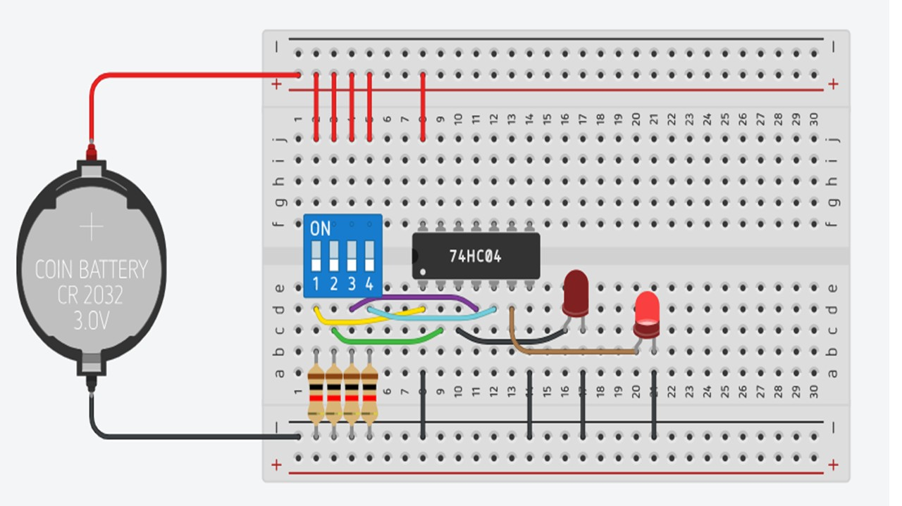
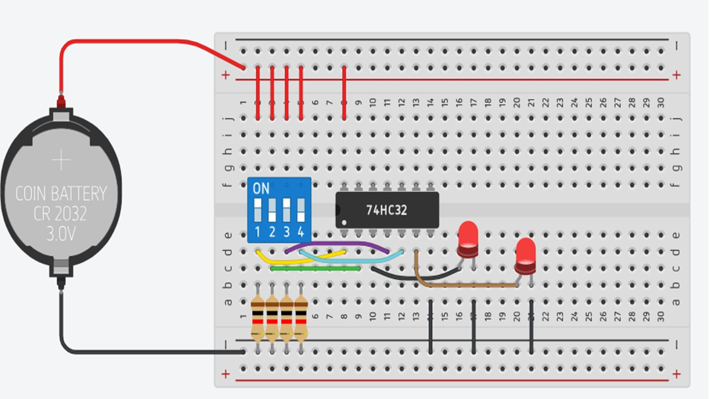
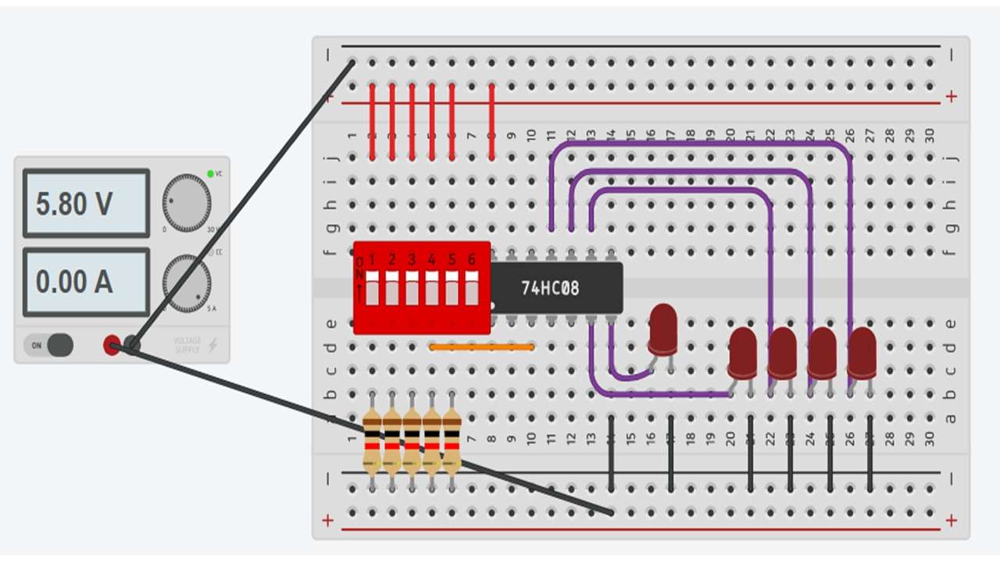

Analizar el funcionamiento de las compuertas lógicas básicas mediante simulación en Tinkercad, comprendiendo su comportamiento y aplicación en circuitos digitales.
Se realizó la simulación de diferentes compuertas lógicas utilizando un circuito integrado 74HC08, switches DIP y LEDs para visualizar las salidas según las combinaciones de entrada.
• Protoboard
• 74HC04
• 74HC08
• 74HC32
• LEDs
• Resistencias
• Fuente de 3V
• Switch DIP



La simulación permitió comprender cómo funcionan las compuertas AND y cómo las combinaciones de entradas determinan el estado de salida del circuito.
Simulacion compuertas Tinkercad